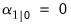
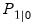
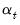

|
|
|
The first step in specifying and estimating a state space model is to create a state space object. Select Object/New Object.../Sspace from the main toolbar or type sspace in the command window. EViews will create a state space object and open an empty state space specification window.There are two ways to specify your state space model. The easiest is to use EViews’ special “auto-specification” features to guide you in creating some of the standard forms for these models. Simply select Proc/Define State Space... from the sspace object menu. Specialized dialogs will open to guide you through the specification process. We will describe this method in greater detail in “Auto-Specification”.
, and the errors in the states dated in
. This timing may not be what you intend. To allow for correlation in the contemporaneous states and signals in time
, you will need to specify errors in the lagged states, and define correlation between the lagged state errors and the errors in the signal equation.
Unless otherwise instructed, EViews will initialize all parameters to the current values in the corresponding coefficient vector or vectors. As in the system object, you may override this default behavior by specifying explicitly the desired values of the parameters using a PARAM or @PARAM statement. For additional details, see “Starting Values”.By default, EViews will handle the initial conditions for you. For some stationary models, steady-state conditions allow us to solve for the values of and. For cases where it is not possible to solve for the initial conditions, EViews will treat the initial values as diffuse, setting , and  to an arbitrarily high number to reflect our uncertainty about the values (see “Technical Discussion”).
, are expressed as linear functions of the state variables , and a remainder term CONST. The elements of the matrix are the corresponding coefficients. For example, the ARMAX example has the following Coefficient Description view:
 and
and  . In this case, you can create a vector or matrix that contains the appropriate values, and use the “@MPRIOR” or “@VPRIOR” keywords to perform the assignment.
. In this case, you can create a vector or matrix that contains the appropriate values, and use the “@MPRIOR” or “@VPRIOR” keywords to perform the assignment.